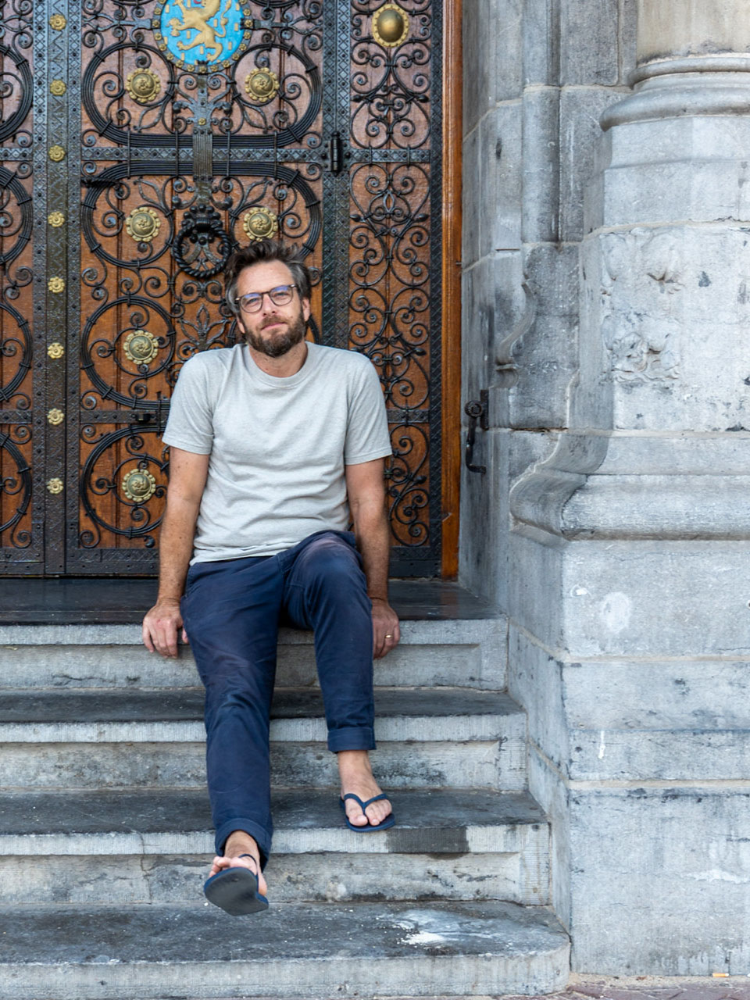
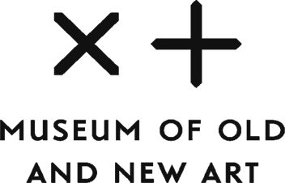
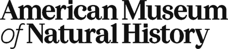
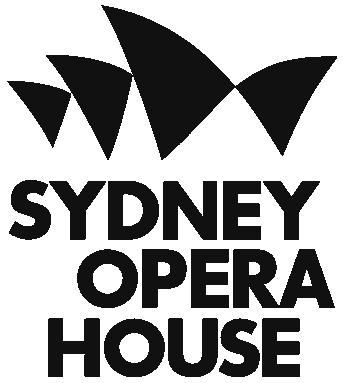
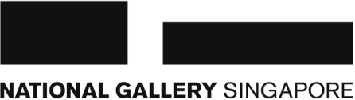
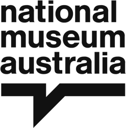
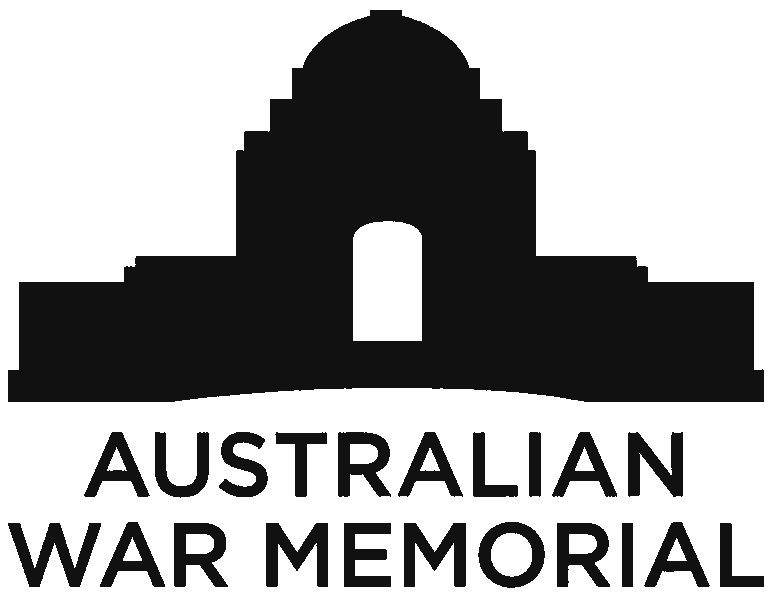
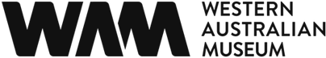
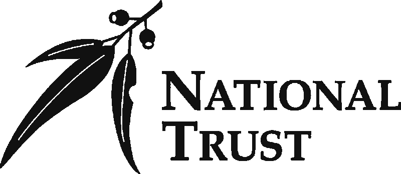
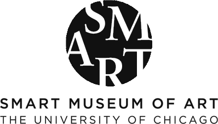

What we do
Concept & story
We shape concept development, content strategy, and narrative frameworks. We map the visitor journey and define novel ways people can interact within a space.
Design direction
Design leadership across interactive, visual, spatial, and media design. We collaborate closely with curators, content teams, developers and spatial designers to bring new experiences to life.
Prototyping
We make stuff! Tangible stuff that we can iterate on and refine based on what we learn along the way. We love to see how concepts and stories evolve by making.
Fieldwork™
The stage before the brief. We get to know your collection, your site, and your people, then help you decide what to build next, why it matters for visitors, and who to build it with.
Who we are

Open Field Studio is led by Ed Blake, an experience designer with twenty years in arts and culture, including roles as Design Director at Art Processors and Interaction Designer at Local Projects in NYC.
In those roles Ed led experience design projects for the Museum of Old and New Art (Mona), the National Museum of Australia, the Cleveland Museum of Art, the American Museum of Natural History, and ARoS Kunstmuseum, among others.
Who we've served
Institutions Ed has designed for while at Art Processors and Local Projects










Contact
Working on something interesting? We're open to projects, collaborations, and good conversations. edward@openfieldstudio.nl